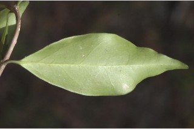
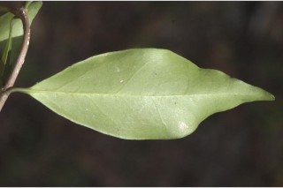
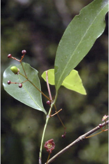
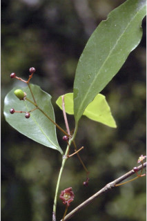
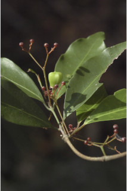
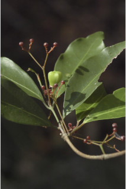

Small trees, up to 6 m tall.
6 ಮೀ ಎತ್ತರದವರೆಗೆ ಬೆಳೆಯುವ ಸಣ್ಣ ಮರಗಳು.
6 മീറ്റര് വരെ ഉയരത്തില് വളരുന്ന ചെറുമരങ്ങള്.
சிறிய மரம் 6 மீ. உயரம் வரை வளரக்கூடியது.
Bark finely fissured; blaze pinkish white.
ತೊಗಟೆ ಸೂಕ್ಷ್ಮವಾಗಿ ಸೀಳಿದ ಮಾದರಿಯಲ್ಲಿದ್ದು ಕಚ್ಚುಮಾಡಿದ ಜಾಗದಲ್ಲಿ ಬಿಳಿಬಣ್ಣ ಹೊಂದಿರುತ್ತದೆ.
നന്നായി വിുകീറിയ പുറംതൊലി; വെട്ട്പാടിന് പിങ്ക്കലര്ന്ന വെളുപ്പുനിറം.
மரத்தின் பட்டை மெல்லிய வெடிப்புகளுடையது, உள்பட்டை பிங்க் கலந்த வெள்ளை.
Branchlets terete, glabrous.
ಕಿರುಕೊಂಬೆಗಳು ದುಂಡಾಕಾರವಾಗಿದ್ದು ರೋಮರಹಿತ -ವಾಗಿರುತ್ತವೆ.
ഉപശാഖകള് ഉരുതും, അരോമിലവും.
சிறிய நுனிக்கிளைகள் குறுக்குவெட்டுத் தோற்றத்தில் வளையமானது, உரோமங்களற்றது.
Leaves simple, opposite, decussate; petiole 0.5-0.9 cm long; lamina 2.5-8 × 1-5 cm narrow elliptic, elliptic, oblong-lanceolate, apex obtusely acuminate or acute, base acute, margin entire or distally serrulate near apex; chartaceous, glabrous; midrib thinly raised above; secondary_nerves 6-8 pairs, slender; tertiary and higher order nerves obscure.
ಎಲೆಗಳು ಸರಳವಾಗಿದ್ದು,ಕತ್ತರಿಯಾಕಾರದ ಅಭಿಮುಖ ಜೋಡನಾವ್ಯವಸ್ಥೆಯಲ್ಲಿರುತ್ತವೆ;ಎಲೆತೊಟ್ಟುಗಳ ಉದ್ದ0.5 ರಿಂದ 0.9 .ಸೆಂ ಮೀ; ಪತ್ರಗಳು 3- 7 X 1.4 -3 ಸೆಂ.ಮೀ ಗಾತ್ರವಿದ್ದು, ಸಂಕುಚಿತ –ಅಂಡವೃತ್ತ, ಅಂಡವೃತ್ತ,ಚತುರಸ್ರಾಕಾರ –ಭರ್ಜಿಯಾಕಾರದ ವೈವಿಧ್ಯತೆಯಲ್ಲಿರುತ್ತವೆ, ಪತ್ರದ ತುದಿ ಚೂಪಲ್ಲದ ಅಗ್ರವನ್ನು ಹೊಂದಿದ ಕ್ರಮೇಣ ಚೂಪಾಗುತ್ತಾ ಹೋಗುವ ಮಾದರಿಯಲ್ಲಿದ್ದು ಚೂಪಾದ ಬುಡವನ್ನು ಹೊಂದಿರುತ್ತವೆ, ಪತ್ರದ ಅಂಚು ನಯವಾಗಿ ಅಥವಾ ತುದಿ ಭಾಗದ ಹತ್ತಿರ ಸೂಕ್ಷ್ಮವಾದ ಗರಗಸ ದಂತಗಳನ್ನು ಹೊಂದಿರುತ್ತದೆ ಎಲೆ ಪತ್ರಗಳು ಕಾಗದವನ್ನೋಲುವ ಮಾದರಿಯಲ್ಲಿದ್ದು ರೋಮರಹಿತವಾಗಿರುತ್ತವೆ;ಮಧ್ಯನಾಳ ಪತ್ರದ ಮೇಲ್ಭಾಗದಲ್ಲಿ ತೆಳುವಾಗಿ ಉಬ್ಬಿರುತ್ತದೆ;ಎರಡನೇ ದರ್ಜೆಯ ನಾಳಗಳು 6 ರಿಂದ 8 ಜೋಡಿಗಳಿದ್ದು ತೆಳುವಾಗಿರುತ್ತವೆ;ಮೂರನೇ ದರ್ಜೆಯ ಮತ್ತು ಉನ್ನತ ವರ್ಗದ ನಾಳಗಳು ಅಸ್ಪಷ್ಟ.
സമ്മുഖ, ഡെക്കുസേറ്റ് ക്രമത്തിലുളള ലഘുപത്രങ്ങള്; ഇലഞെട്ടിന് 0.5 സെ.മീ മുതല് 0.9 സെ.മീ വരെ നീളം; പത്രഫലകത്തിന് 2.5 സെ.മീ മുതല് 8 സെ.മീ വരെ നീളവും 1 സെ.മീ മുതല് 5 സെ.മീ വരെ വീതിയും, ആകൃതി വീതികുറഞ്ഞ ദീര്ഘവൃത്താകാരമോ, ദീര്ഘവൃത്താകാരമോ, ആയത-കുന്താകാരമോ ആണ്, പത്രാഗ്രം മുനപ്പില്ലാത്ത ചെറുവാലോട് കൂടിയതോ കൂര്ത്തതോ ആണ്, കൂര്ത്ത പത്രാധാരം, അരികുകള് അവിഭജിതമോ അഗ്രത്തോടടുത്ത് ദന്തുരമോ ആണ്; കടലാസ് പോലത്തെ പ്രകൃതം, അരോമിലം; മുഖ്യസിര മുകള് ഭാഗത്ത് ചെറുതായി ഉയര്ന്ന വിധത്തില്, ദ്വിതീയ ഞരമ്പുകള് നേര്ത്തതാണ്, 6 മുതല് 8 വരെ ജോഡികള്; ത്രിതീയ ഞരമ്പുകളും മറ്റ് ഞരമ്പുകളും അപ്രസക്തം.
இலைகள் தனித்தவை, எதிரடுக்கமானவை, குறுக்குமறுக்கமானவை; இலைக்காம்பு 0.5-0.9 செ.மீ. நீளமானது; இலை அலகு 2.5-8 X 1-5 செ.மீ., குறுகிய நீள்வட்டம், நீள்வட்டம், நீள்சதுரம்-ஈட்டி வடிவம், அலகின் நுனி மழுங்கியதுடன் அதிக்கூரியது அல்லது கூரியது, அலகின் தளம் கூரியது, அலகின் விளிம்பு முழுமையானது அல்லது அலகின் நுனி விளிம்பில் மிகச்சிறிய ரம்பபற்களுடையது, சார்ட்டேசியஸ், உரோமங்களற்றது; மையநரம்பு மேற்புறத்தில் அலகின் பரப்பைவிட உயர்ந்து இருக்கும்; இரண்டாம் நிலை நரம்புகள் 6-8 ஜோடிகள் மெலிதானது; மூன்றாம் நிலை நரம்புகள் மற்றும் அதற்கு மேற்பட்ட நரம்புகள் தெளிவற்றது.
Flowers more than 7 in spreading axillary cymes, red.
ಹೂಗಳು 7 ಕ್ಕಿಂತ ಹೆಚ್ಚು ಇದ್ದು ಹರಡುವ ಅಕ್ಷಾಕಂಕುಳಿನಲ್ಲಿರುವ ಮಧ್ಯಾರಂಭಿ ಮಾದರಿಯಲ್ಲಿರುತ್ತದೆ; ಹೂಗಳು ಕೆಂಪು ಬಣ್ಣದವು.
ചുവന്ന നിറത്തിലുളള, ഏഴിലധികം പൂക്കള്, പടര്ന്ന വിധത്തിലുളള കക്ഷീയ സൈമുകളില്.
மலர்கள் ஏழுக்கு மேற்பட்டது, இலைக்கோணங்களில் அமைந்த சைம், சிவப்பு நிறமான மலர்களை உடையது.
Capsule obcordate; seeds 1-2 per cell.
ಸಂಪುಟ ಫಲಗಳು ತಲೆಕೆಳಗಾದ ಹೃದಯಾಕಾರದಲ್ಲಿದ್ದು ಪ್ರತಿ ಕೋಶದಲ್ಲಿ ಒಂದರಿಂದ ಎರಡು ಬೀಜಗಳನ್ನು ಹೊಂದಿರುತ್ತವೆ .
കായ അപഹൃദയാകാരത്തിലുളള കാപ്സ്യൂള് ആണ്; വിത്തുകള് ഓരോ അറയിലും ഒന്നോ രാേ വീതം.
கேப்சூல், தலைகீழ் இதய வடிவமானது, ஒவ்வொரு அறையிலும் 1-2 விதைகளையுடையது.

 


 

 
